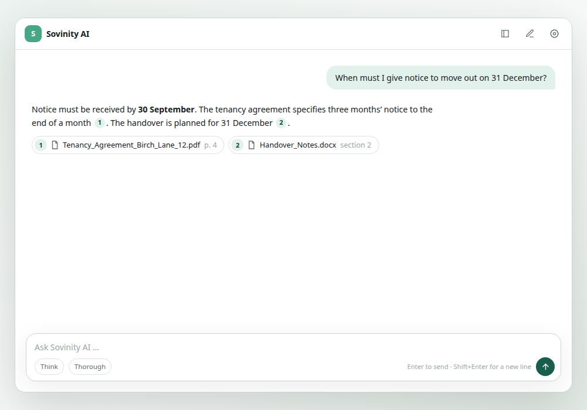
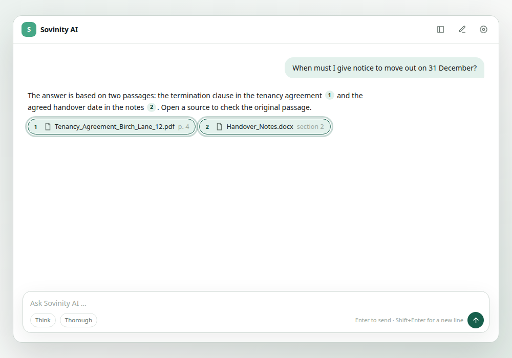
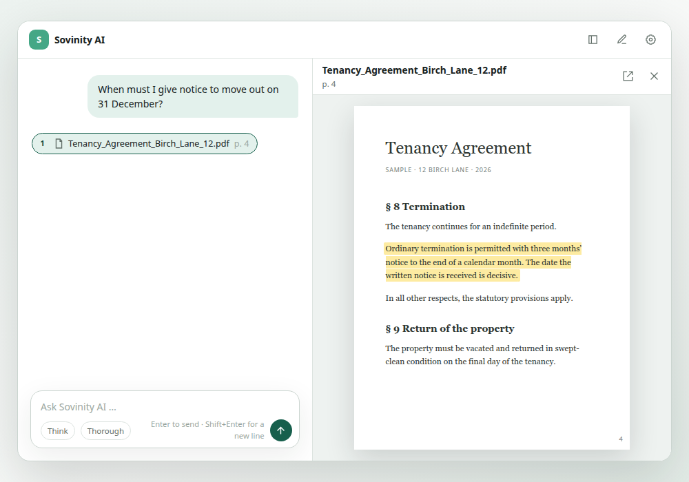

Read
Select local documents and make them searchable. Your records do not need to move to a public cloud.
Sovinity · Private Document Intelligence
Ask questions about your local documents. Sovinity shows answers with verifiable source passages — without requiring a public AI service to know your confidential content.



From archive to answer
Sovinity makes local files useful with private AI. The original document remains the evidence — not the answer that merely sounds convincing.
Select local documents and make them searchable. Your records do not need to move to a public cloud.
Ask questions in your own words. OCR and semantic search also make scanned records discoverable.
Read the answer and follow its source passages back to the underlying document.
Data sovereignty by architecture
Sovinity is designed for local or isolated installations. Files, extracted text, vectors and AI models can stay in an environment you control. Where data is processed should be visible and verifiable.
One core, two perspectives
For household paperwork or confidential work documents, Sovinity helps you find information in local files and check the evidence.
Sovinity Home
Ask about insurance, tax, school, contracts and invoices, then check the answer against the original.
Sovinity Private Workspace
Ask about local project, client or organisation documents and trace the source passages.
Why Sovinity
An answer becomes useful when you can check its source. Sovinity pairs questions about your documents with traceable passages.
Questions
No. Sovinity supports local or private processing. The exact processing path depends on your installation.
Sovinity processes imported local files. OCR also extracts text from scanned documents; semantic search helps you find it again.
No. You can use your existing local documents as sources for questions and search.
We do not add analytics, marketing services or external font services to this static website. Hosting details are described in the privacy notice.
Sovinity AI
Compare monthly and yearly payment or contact us about working with local documents.